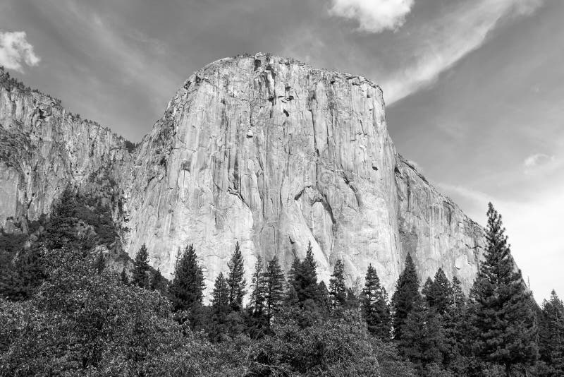
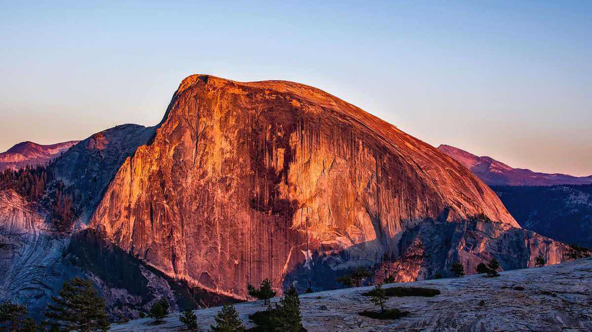
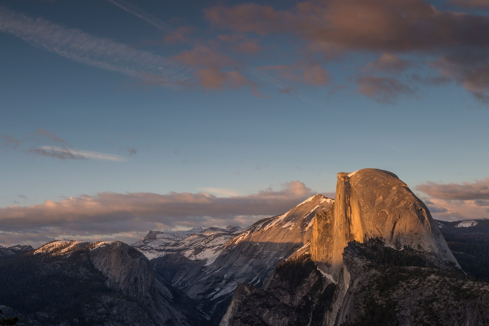
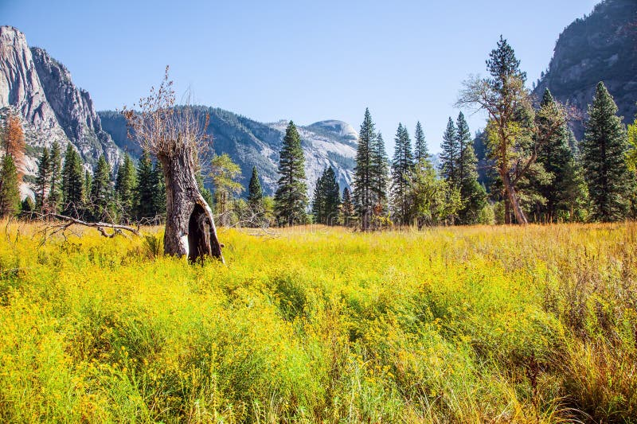
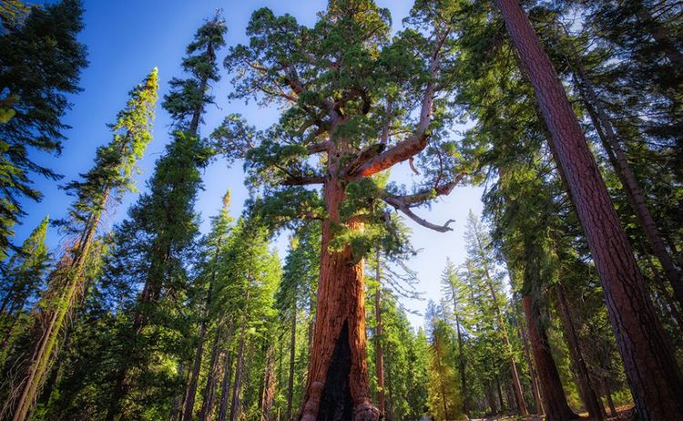
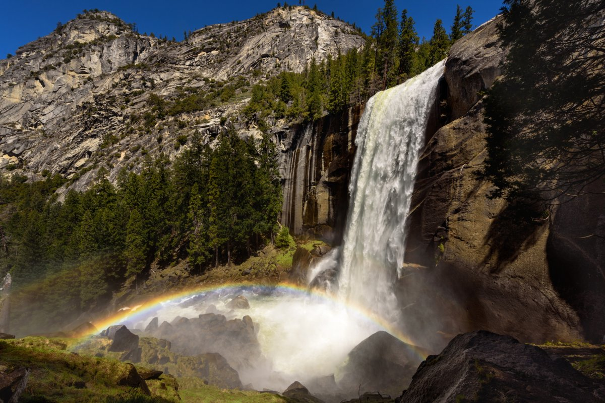
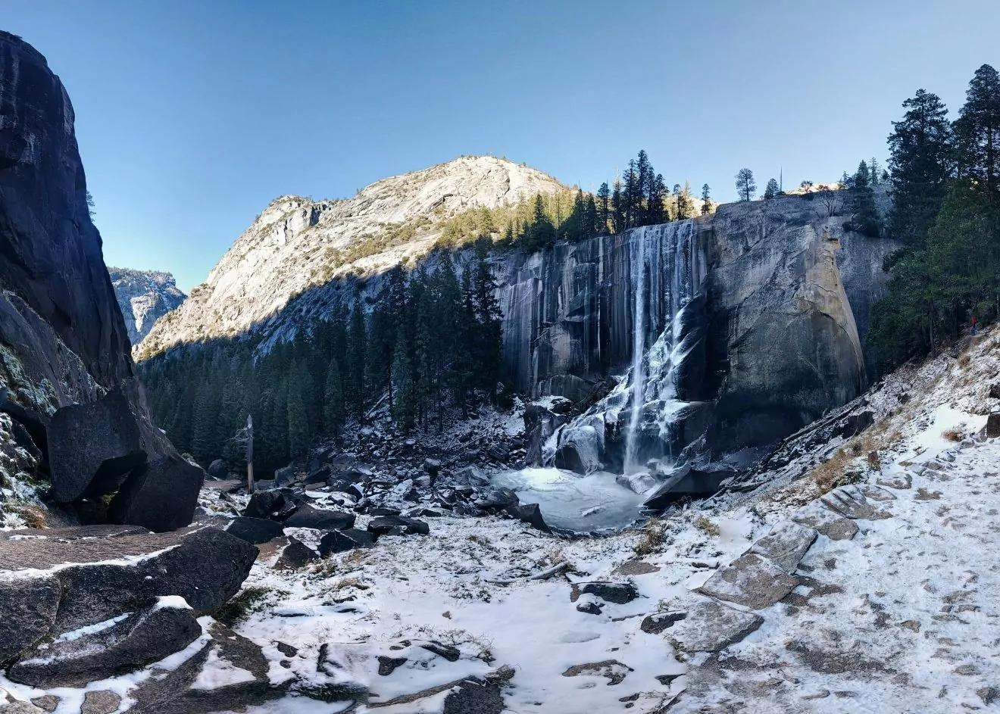

花岗岩：风景的骨架
优胜美地的岩壁几乎全是花岗岩——一种由地下岩浆缓慢冷却形成的岩石。 它原本深埋地下数公里，因为地壳抬升与上覆岩层被侵蚀，才露出地表。
冰川是第二把刻刀。更新世的巨大冰舌沿着断裂带反复刨蚀， 把原本 V 形的河流峡谷磨成了如今 U 形的宽阔谷地， 同时把两侧岩壁抛光得近乎垂直——这就是酋长岩与半圆顶的由来。
酋长岩
世界最大的花岗岩独石之一，垂直落差近千米，是全球攀岩者的终极目标。
半圆顶
冰川削去了它的另一半，留下标志性的圆顶剖面，是公园的象征。
大教堂岩
图奥勒米高地上的尖顶岩峰，形态锐利，是高地一带的地标。
哨兵岩
谷底西侧的独石，日落时会泛起温暖的橙色，是热门拍摄对象。
水：雕刀与画笔
冰川退去后，接手的是一年一度的融雪。春天的水量把岩壁冲刷得更加分明， 也带来了壮观的花岗岩瀑布群——不过这份壮观很短暂，通常只持续到 7 月。
到了夏末，同一道瀑布会变成细线乃至完全断流。这种强烈的季节性， 本身就是优胜美地风景的一部分。
八大经典观景点
| 观景点 | 所在区域 | 看什么 | 适合时段 |
|---|---|---|---|
| 隧道观景台 | 谷口 | 酋长岩 + 半圆顶 + 瀑布同框 | 全天，傍晚最佳 |
| 库克草甸 | 优胜美地谷 | 半圆顶倒影 | 清晨 |
| 哨兵草甸 | 优胜美地谷 | 优胜美地瀑布全景 | 上午 |
| 冰川点 | 高地 | 半圆顶正面与全谷俯瞰 | 日落 / 星空 |
| 克拉克点 | 默塞德河谷 | 两道瀑布同框 | 上午 |
| 镜湖 | 谷底东端 | 早春水面倒影 | 春季上午 |
| 奥姆斯特德点 | 蒂奥加路 | 半圆顶侧后方视角 | 全天 |
| 瓦沃纳隧道南口 | 南侧 | 谷底远景 | 傍晚 |
风光图鉴
点击任意图片可放大查看。







光线与季节的关系
同一处风景在一天中的不同时刻、一年中的不同月份，会呈现完全不同的面貌。 掌握光线规律，能让你的照片质量提升一个档次。
- 清晨：谷底常有薄雾，光线柔和，适合拍摄草甸倒影与瀑布水雾。
- 正午：顶光强烈、阴影生硬，不太适合拍岩壁，适合徒步赶路。
- 傍晚：西斜的暖光会把酋长岩与半圆顶染成橙金色——这是全天最佳时段。
- 春季：瀑布水量最大，但天气多变，云层反而能增加画面层次。
- 秋季：能见度最高、色彩最丰富，是综合拍摄条件最好的季节。
- 冬季：低角度阳光整天斜射岩壁，加上积雪，容易拍出干净的画面。
看得见，也留得下
优胜美地每年接待数百万访客，脆弱的草甸、岩壁涂层与野生动物都承受着压力。 做到下面几件事，就能让这片风景继续留给下一个人。
- 所有垃圾（包括果皮）随身带走，不留任何食物残渣。
- 不要踩踏草甸、攀爬岩画或移动石堆——它们都是景观的一部分。
- 与野生动物保持距离，不要投喂；食物必须存入防熊箱或车内。
- 使用无人机需要特别许可，园内原则上禁止随意飞行。
- 离开步道会加速侵蚀，请始终行走在既有路径上。